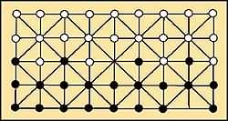
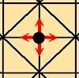
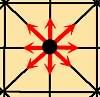
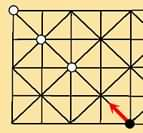
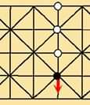
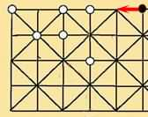
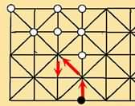
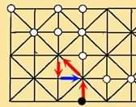
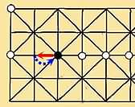

| Au début de la partie les pions sont disposés comme sur la figure ci-contre. Chaque joueur dispose de 22 pions. On tire au sort le joueur qui commence. |  |
| Le but du jeu est de capturer tous les pions de l'adversaire. A son tour de jeu, un joueur doit déplacer une de ses pièces, dans n'importe quel direction, d'une intersection à une autre (en suivant les lignes) pourvu que le point d'arrivée soit vide. (voir figure ci-contre) |  |
| - Par approche: un joueur déplace l'un de ses pions vers un ou plusieurs pions adverses alignés. Le joueur capture tous les pions de l'alignement Dans l'exemple ci-contre le joueur noir prend les trois pions blancs |
 |
| - Par éloignement: un joueur déplace l'un de ses pions en s'éloignant d'un ou plusieurs pions adverses aligné. Le joueur capture tous les pions de l'alignement Dans l'exemple ci-contre le joueur noir prend les trois pions blancs |
 |
| Attention ! On ne capture que les pions d'un alignement inintérompu Dans l'exemple ci-contre, le joueur noir ne capture que 2 pions blancs. |
 |
| Au cours d'un même mouvement Il est possible d'enchaîner les prises avec le même pion, pourvu que celui-ci change de direction à chaque déplacement et qu'il ne repasse pas deux fois sur la même intersection. Dans l'exemple ci-contre le joueur noir déplace son pion 3 fois consécutive et capture l'ensemble des 7 pions blancs |
 |
| Dans l'exemple ci-contre le joueur noir déplace son pion 3 fois consécutives et capture 7 pions blancs, mais il ne peut pas effectuer le quatrième déplacement (flèche bleu) car il a déjà occupé cette intersection au cours de son déplacement. |  |
| Dans l'exemple ci-contre le joueur noir peut effectuer le déplacement rouge et prendre les trois pions blancs dont'il s'éloigne ou bien le pion blanc dont il s'approche. Mais ensuite il n'a pas le droit de revenir (flèche bleu) car il reviendrait sur une position déjà occupé au cours de son déplacement. |  |